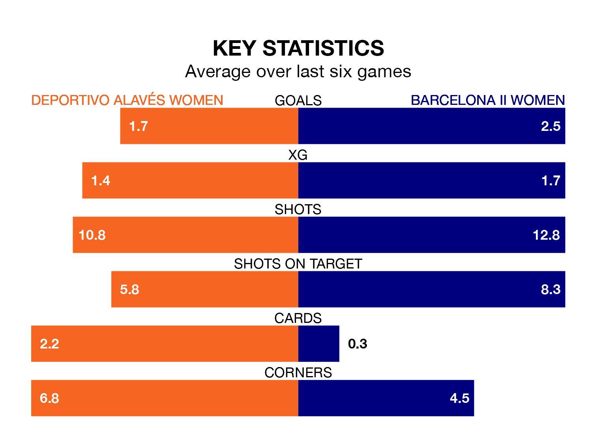

Barcelona II Women visit Deportivo Alavés Women on early Sunday on the back of four consecutive wins in Primera Federación Femenina.
Barcelona II have picked up 15 points from their last six games, and they face a Deportivo Alavés side who have also won their last three matches, and collected 11 points from the last possible 18.
With 31 goals in 16 games so far this season, Barcelona II are the league's joint-highest scorers with 1.9 goals per game. And they are conceding fewer than average, letting in 13 goals at a rate of 0.8 per game.
Deportivo Alavés, meanwhile, are average scorers, with 1.3 goals per game. They have conceded 1.1 goals per game.
The away team are third in the table after 16 games, of which they have won 11 and drawn one, earning 34 points.
The hosts are four places behind Barcelona II in seventh, with six wins and five draws putting them on 23 points.
Deportivo Alavés's last match was on Sunday, a 2-1 win against Madrid II Women, with getting the goals for Deportivo Alavés.
Barcelona II beat Logroño Women 4-0 last time out, on January 27, with on the scoresheet.
Updated: 09:21 (UTC), 30/01/24